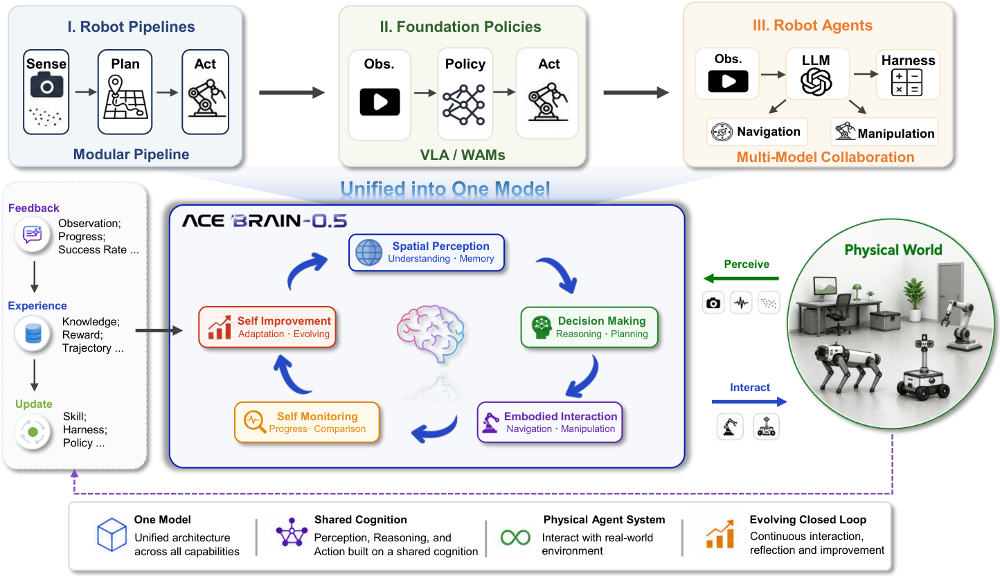

ACE-Brain-0.5: A Unified Embodied Foundation Model for Physical Agentic AI
arXiv preprint arXiv:2607.04426, 2026
ACE-Brain-0.5 develops a unified foundation model for embodied agents that act in the physical world, bringing perception, reasoning, and action into one system.